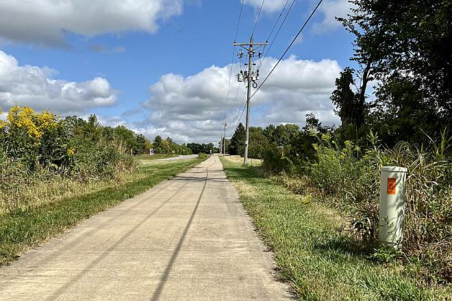
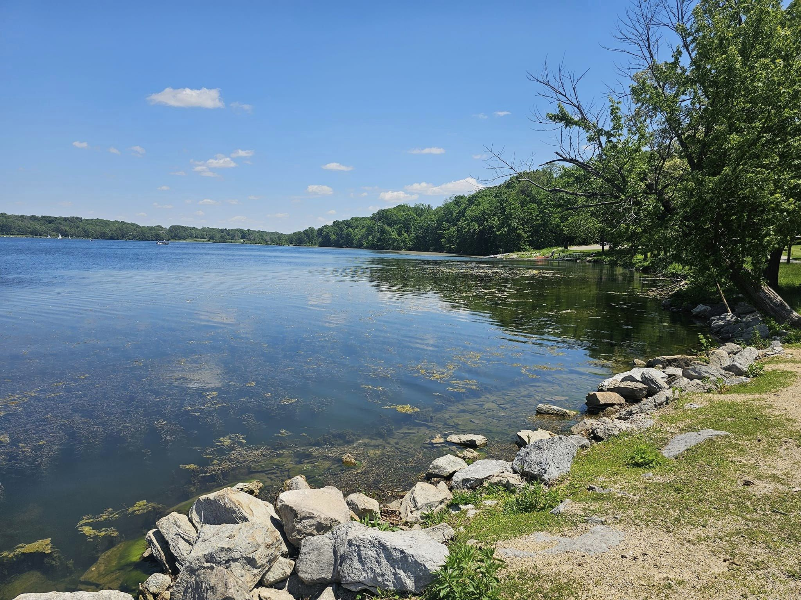
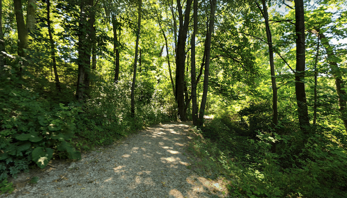

This is a fictional website created for educational purposes as part of MKTG:4400 at the University of Iowa. It is not a real business.
Eastern Iowa Trail Gallery
Take a look at scenic photos captured by our field guides across Iowa City and surrounding nature preserves.

Iowa River Corridor Trail
The paved trail along the Iowa River on the University of Iowa campus.

Lake Macbride Shoreline
Scenic summer lake views along the shoreline hiking footpaths near Solon.

Hickory Hill Park Woodlands
Shaded dirt trails winding through timber and creeks in northeast Iowa City.
Dog-Friendly Parks
Hiker enjoying an afternoon walk along local shaded nature preserves.